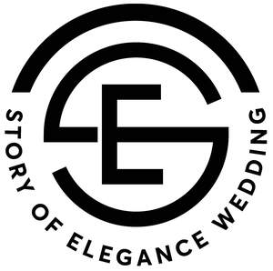
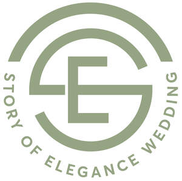

Trade Mark Journal No.2025/027 4 July 2025
UK00004222673 22 June 2025 (16)
Mark 1

Mark 2

- Class 16
- Wedding albums; Wedding books; Party invitations; Party stationery; Invitations; Pads of party invitations; Paper party decorations; Paper cake decorations; Day planners; Metallic paper party decorations; Anniversary cards; Party ornaments of paper; Birthday cards; Year planners; Birthday books; Occasion cards; Daily planners; Dinner mats of card; Holiday cards; Event albums; Dinner mats of paper; Stencils for decorating food and beverages; Food wrappers; Printed invitations; Invitation cards; Printed paper invitations; Printed cardboard invitations; Announcement cards [stationery]; Envelopes [stationery]; Stationery; Envelopes for stationery use; Printed stationery; Musical greeting cards; Gift cards; Decorative paper garlands for parties; Decorative paper centerpieces; Musical greetings cards; Plantable seed paper [stationery]; Printed event admission tickets; Paper party bags; Organizers for stationery use; Pop-up greetings cards; Printed paper signs featuring names for use for special events; Paper stationery; Clips for paper [stationery]; Gift wrap cards; Cards; Greeting cards; Greetings cards; Printed cards; Index cards [stationery]; Announcement cards; Blank cards; Correspondence cards; Picture cards; Paper boxes for storing greeting cards; Printed recipe cards; Note cards; Printed informational cards; Filing cards; Christmas cards; Paper loyalty cards; Flash cards; Post cards; Printed mail response cards; Menu cards; Motivational cards; Business cards; Trivia cards; Collectable cards; File cards; Blank note cards; Blister cards; Name cards; Index cards; Visiting cards; Baseball cards; Reference cards; Scoring cards; Trading cards; Place cards; Social note cards; Record cards; Tags for index cards; Card files; Packaging boxes of card; Albums for collecting magnetic cards; Table mats of card; Card indexes; Menus; Printed menus; Printed recipes sold as a component of food packaging; Paperboard trays for packaging food; Printed paper signs featuring table numbers for use for special events; Paper take-out cartons for food; Printed tables; Cookbooks; Table place setting mats of card; Table place setting mats of cardboard; Place mats of paper; Paper place mats; Table place setting mats paper; Place mats made of paper; Carrying cases specially adapted to hold collectible trading cards; Plastic pages with pockets for holding trading cards; Trading cards other than for games; Trading cards, other than for games; Carrying cases specially adapted to hold sports trading cards; Collectable trading cards; Arithmetical tables; Tables (Arithmetical -); Numbers [type]; Calculating tables; Tables (Calculating -); Paper letters and numbers; Table decorations of paper; Table runners of paper; Table mats of paper; Paper table mats; Table napkins of paper; Napkins of paper (Table -); Paper table napkins; Table cloths of paper; Paper table cloths; Table mats of cardboard; Paper table covers; Mail order catalogues; Order forms; Booklets; Information booklets; Printed booklets; Order forms for use in home shopping; Thank you cards; Paper gift boxes; Advertisement boards of card; Wrapping materials made of card; Guest books; Books; Visitors books; Non-fiction books; Series of non-fiction books; Autograph books; Writing books; Comic books; Poster books; Cookery books; Books for children; Travel books; Fiction books; Gift books; Series of fiction books; Music books; Check books; Sketch books; Note books; Cook books; Music note books; Log books; Commemorative books; Manuscript books; Covers for books; Educational books; Copy books; School writing books; Signature books; Appointment books; Hymn books; Resource books; Recipe books; Baby books; Cheque books; Baby books [storybooks]; Printed music books; Account books; Fantasy books; Printed books; Coloring books; Guide books; Books featuring fantasy stories; Song books; Covers for cheque books; Ledger books; Prayer books; Agenda books; Reference books; Jackets of paper for books; Telephone books; Books featuring fictional stories; Wirebound books; Ledgers [books]; Pop-up books; Bill books; Story books; Drawing books; Score books; Picture books; Religious books; Writing or drawing books; Hand books; Coupon books; Manga comic books; Colouring books; Memorandum books; Painting books; Information books; Sticker books; Children's books; Blank journal books; Coloring books for adults; Travel guide books; Scrap books; Binding materials for books and papers; Stenographers' note books; Activity books; Coffee table books; Index books; Flip books; Expense books; Envelopes; Stationery boxes; Paper folders [stationery]; Stickers [stationery]; Paper envelopes for packaging; Binders [stationery]; Folders [stationery]; Stationery folders; Wrappers [stationery]; Office paper stationery; Transparencies [stationery]; Stencils [stationery]; Paper sheets [stationery]; Manila envelopes; Scented stationery; Office stationery; Thumbtacks [stationery]; Files [stationery]; Seals [stationery]; Pads [stationery]; Pencil ornaments [stationery]; Pencil ornaments (stationery); Envelope papers; Adhesives for stationery; Copying paper [stationery]; Envelope paper; Pocket books [stationery]; Marking pens [stationery]; Bottle envelopes of cardboard or paper; Bottle envelopes of paper or cardboard; Bags [envelopes, pouches] of paper or plastics, for packaging; Pins [stationery]; Protractors [for stationery and office use]; Plastic envelopes; Gummed tape [stationery]; Covers [stationery]; Manifolds [stationery]; Tapes (adhesive -) [stationery]; Writing stationery; Glitter pens for stationery purposes; Adhesive pads [stationery]; Self-adhesive tapes for stationery and household purposes; Selfadhesive tapes for stationery or household purposes; Self-adhesive tapes for stationery use; Adhesive foils stationery; Cases for stationery; Stationery cases; School supplies [stationery]; Glue pens for stationery purposes; Paper mail pouches; Document holders [stationery]; Stationery (Cabinets for -) [office requisites]; Cabinets for stationery [office requisites]; Packaging boxes of paper; Letterhead paper; Glitter for stationery purposes; Document files [stationery]; Label printing machines for household and stationery use; Notepads; Adhesive tapes for stationery or household purposes; Adhesive tapes for stationery purposes; Desktop cabinets for stationery [office requisites]; Paper embossers [office requisites]; Stationery and educational supplies; Felt mats for Chinese calligraphy (stationery); Gummed cloth for stationery purposes; Paper pouches for packaging; File pockets for stationery use; Adhesives for stationery purposes; Letterheads; Paper bags for packaging; Packaging bags of paper; Marking inks for stationery purposes; Notepaper; Paper boxes; Boxes of paper; Paper gift bags; Writing cases [stationery]; Adhesive tape cutters being stationery; Boxes of cardboard or paper; Boxes of paper or cardboard; Postcards; Document holders being articles of stationery; Rubber bands [stationery]; Glue for stationery or household purposes; Sealing tape for stationery use; Automatic paper clip dispensing machines for office or stationery use; Adhesives for stationery or household purposes; Seaweed glue for stationery; Adhesive tape dispensers for household or stationery use; Printed packaging materials of paper; Cartons of card for packaging; Packaging cartons of card; Adhesive tape for stationery purposes; Pastes for stationery or household purposes; Glitter glue for stationery purposes; Envelope sealing machines, for offices; Envelope sealing machines for offices; Packaging boxes of cardboard; Cardboard gift boxes; Packing [cushioning, stuffing] materials of paper or cardboard; Stuffing of paper or cardboard; Boxes of cardboard; Lining papers for packaging; Cardboard boxes; Labels of paper or cardboard; Cardboard mailing tubes; Glassine paper; Corrugated cardboard boxes; Folders for letters; Cartons of cardboard for packaging; Packaging cartons of cardboard; Paper folders; Containers of paper for packaging; Packaging containers of paper; Boxes for pens; Hat boxes of paper; Containers of card for packaging; Packaging containers of card; Packing cardboard containers; Packing containers of cardboard; Cardboard cartons; Corrugated boxes; Folders for papers; Paper carton sealing tape; Notelets; Packing paper; Gift boxes made of cardboard; Packing cardboard; Bags and articles for packaging, wrapping and storage of paper, cardboard or plastics; Paper gift wrapping ribbons; Printed paper labels; Pocket handkerchiefs of paper; Padded bags of paper; Cardboard labels; Cardboard packaging boxes in made-up form; Padded bags of card; Postage stamps; Stamps (Postage -); Gift boxes; Gift cartons; Bottle wrappers of cardboard or paper; Bottle wrappers of paper or cardboard; Hat boxes of cardboard; Die-cut paper shapes; Postcard paper; Bags made of paper for packaging; Calligraphy ink; Calligraphy paper; Writing brushes for calligraphy; Writing brush for calligraphy; Papers for painting and calligraphy; Pen calligraphy copybooks; Writing brush calligraphy copybooks; Xuan paper for Chinese painting and calligraphy; Writing brushes for ground calligraphy; Writing brush for Shodo; Felt mats for calligraphy; Water-writing cloths for calligraphy practice; Calligraphic works; Paintings and calligraphic works; Lettering stencils; Dressmaking stencils for drawing; Art etchings; Drawing stencils; Watercolor paintings; Writing ink; Art paper; Ink for writing instruments; Drawing ink; Painting pencils; Watercolour paintings; Writing brushes; Etching pens; Watercolor [watercolour] saucers for artists; Saucers (Watercolor [watercolour] -) for artists; Drawing pens; Japanese handicraft paper; Ink for fountain pens; Graphic art books; Nibs of gold for writing instruments; Nibs for writing instruments; Watercolors [paintings]; Graphic art reproductions; Stencils for face painting; Printed art reproductions; Japanese ceremonial paper strings (mizuhiki); Graphic art prints; Pencil ornaments; Works of art of paper; Steel pens [styluses or stencil pens]; Art prints; Watercolours [paintings]; Inkstones; Ink for pens; Ink pens; Ink sticks (sumi); Gum arabic glue for stationery or household purposes; Lettering guides; Watercolours [finished paintings]; Watercolor pictures; Handwriting specimens for copying; Stencils; Drawing brushes; Decoration and art materials and media; Mimeograph stencils; Pen nibs; Printing fonts; Cartridges (Ink -) for writing instruments; Drawing paper; 3D wall art made of paper; Writing utensils; Ink erasers; Pens; Ballpoint pens; Ball-point pens; Felt-tip pens; Rollerball pens; Refills for ballpoint pens; Inkless pens; Fountain pens; Stands for pens and pencils; Marker pens; Highlighter pens; Balls for ball-point pens; Tips for ballpoint pens; Coloured pens; Brush pens; Colouring pens; Marking pens; Pens for marking; Ink cartridges for pens; Ink cartridges for fountain pens; Ballpoint pen refills; Colour pens; Steel pens; Ball pens; India ink pens; Pen trays; Cases for pens; Stands for pens; Ball-point pen and pencil sets; Highlighting pens; Pen refills; Fiber-tip pens; Stylographic pens; Correction pens; Fiber-tip pens; Pen and pencil boxes; Felt pens; Pen ink refills; Pen boxes; Fibre-tip pens; Pen and pencil holders; Pen or pencil holders; Pen cartridges; Skin marker pens; Gel roller pens; Film pens; Marking pen refills; Fountain pen ink cartridges; Pen ink cartridges; Artists' pens; Pen holders; Pen and pencil cases; Felt writing pens; Felt marking pens; Porous tip pens; Pen clips; Stands for pen and pencil; Felt tip pens; Ink pen refill cartridges; Roller ball pens; Pencils; Pen sets; Pencils with erasers; Ball point pens; Pen cases; Pens [office requisites]; Pens of precious metal; Pen stands; Pen wipers; Pencil erasers; Pocket pen shields; Retractable pencils; Pencil trays; Ink pads; Ballpoint refill cartridges; Pencil eraser refills; Coloured pencils; Holders for notepads; Ink pads for seals; Inkwells; Pencil boxes; Pencil cups; Colouring pencils; Pencils for colouring; Nibs; Drawing pencils; Pen rests; Pencil sharpeners; Sharpeners (Pencil -); Sharpeners for cosmetic pencils; Scribble pads; Scribbling pads; Propelling pencil refills; Ink sticks; Decorations for pencils; Pencil holders; Inks for pads; Attachments for pencils; Ink stamps; Holders for notebooks; Charcoal pencils; Writing paper pads; Mechanical pencil sharpeners; Pencil tins; Cosmetic pencil sharpeners; Pencil grips; Electric pencil sharpeners; Pencil caps; Pencil extenders; Pencil cases; Pencil sets; Pencil sharpening machines; Pencil leads; Pencil lead refills; Leather pencil cases; Blackboard erasers [chalk erasers]; Pencil point protectors; Pencil lead holders; Chalk erasers; Roll-up pencil cases; Pencil top ornaments; Mechanical pencils; Colour pencils; Whiteboard erasers; Correction pencils; Pencil sharpeners, electric or nonelectric; Colour pencils; Coloured lead pencils; Slate pencils; Correcting pencils; Propelling pencils; Erasers; Automatic pencils; Drawing protractors; Notebook paper; Chalks for drawing; Pastel crayons; Extensions for pencils; Pencil sharpening machines, electric or non-electric; Charcoal for drawing; Correcting pencils for type; Eraser dusting brushes; Blank paper notebooks; Artists' pencils; Drawing tablets [drawing pads]; Writing board erasers; Erasers (Writing board -); Typewriter paper; Stencil paper [mimeograph paper]; Pastels [crayons]; Coloured chalk; Drawing pads; Drawing instruments for blackboards; Writing chalk; Letter trays; Writing sets; Letter files; Letter clips; Letter openers; Letter racks; Drawing sets; Letter paper; Desk sets; Printing sets; Letter holders; Writing cases [sets]; Paper knives [letter openers]; Clips for letters; Letters [type]; Electric letter openers; Print letters; Set squares for drawing; Holders for letters; Letter paper [finished products]; Steel letters; Informational letters; Type [numerals and letters]; Portable printing sets; Painting sets for children; Printing sets, portable [office requisites]; Religious circular letters; Letter openers of precious metal; Letter inserter machines for office use; Document stamp racks; Adhesive-backed letters and numbers; Memo blocks; Printers' letters [type]; Japanese paper; Japanese paper (torinoko-gami); Japanese paper [torinoko-gami]; Thick Japanese paper [hosho-gami]; Paper for Japanese sliding screens (shojigami); Shoji-gami [paper for Japanese sliding partitions]; Chinese inks; Adhesives for stationery or household use; Labels of paper; Paper labels; Paper and cardboard; Placards of paper or cardboard; Label paper; Adhesive labels of paper; Signboards of paper or cardboard; Paper luggage labels; Industrial paper and cardboard; Advertising signs of paper or cardboard; Advertisement boards of paper or cardboard; Cardboard; Paper hangtags; Containers for ice made of paper or cardboard; Padding materials of paper or cardboard; Paper containers; Cardboard packaging; Cardboard hangtags; Corrugated paper; Paperboard [cardboard]; Paper; Newsprint paper; Wet erase paper labels; Laminated paper; Placards of paper; Absorbent sheets of paper or plastic for foodstuff packaging; Handpainted paper wine bottle labels; Airtight packaging of paper; Tissue paper for making stencil paper; Kraft paper; Greaseproof paper; Bags of paper; Paper bags; Printed paper signs; Selfadhesive paper for notes; Boxes made of paper; Recycled paper; Gummed paper; Stencil paper; Paper stock [printing paper]; Containers of cardboard for packaging; Paper tapes; Placards of cardboard; Tissue paper for use as material of stencil paper (ganpishi); Bags for packaging made of biodegradable paper; Adhesive printed labels; Adhesive paper; Paper doilies; Coasters of paper; Paper coasters; Corrugated cardboard; Shelf paper; Tablecloths of paper; Paper tablecloths; Cardboard made from paper mulberry (senkasi); Cardboard containers; Industrial packaging containers of paper; Paper ribbons; Ribbons (Paper -); Ribbons of paper; Wrapping paper; Paper tags; Paper napkins; Napkins of paper; Collapsible boxes of paper; Cloth paper; Cardboard cake boxes; Plastic coated copying paper; Plastic sheets for packaging; Paper banners; Banners of paper; Carrier bags of paper or plastic; Humidity control sheets of paper or plastic for foodstuff packaging; Paper signboards; Paper for wrapping books; Paper ribbon; Paper staples; Paper signs; Printed advertising boards of cardboard; Parchment paper; Plastic sheets for wrapping and packaging; Printing paper; Paper identification tags; Index files; Gift tags; Paper gift tags; Luggage tags of paper; Price tags; Baggage tags of paper; Luggage tags of cardboard; Colour sample cards; Bar code ribbons; UV ink markers; Barcode ribbons; Printed luggage labels; Ribbons for handheld label printers [office requisites]; Debit cards without magnetic coding; Printed novelty wine labels; Handheld label printers [office requisites]; Adhesive labels; Dot matrix printer ribbons; Printed brochures; Printed flyers; Printed calendars; Printed pamphlets; Printed visuals; Printed advertisements; Printed leaflets; Photographs [printed]; Printed photographs; Printed guides; Printed timetables; Timetables (Printed -); Printed manuals; Printed coupons; Printed publications; Publications (Printed -); Printed curricula; Printed vouchers; Printed charts; Printed programmes; Printed newsletters; Printed periodicals; Printed questionnaires; Printed diagrams; Printed lectures; Printed patterns; Printed certificates; Printed emblems; Printed informational folders; Printed plans; Printed reports; Forms, printed; Printed forms; Printed tickets; Printed music; Printed informational flyers; Printed horoscopes; Printed advertising boards of paper; Printed diplomas; Printed informational sheets; Printed price lists; Printed information sheets; Printed lessons; Printed awards; Printed flip charts; Printed answer sheets; Printed geographical maps; Annuals [printed publications]; Printed emblems [decalcomanias]; Printed cartoon strips; Printed patterns for costumes; Printed sheet music; Printed periodical publications; Printed consumer reports; Printed educational materials; Computer programs in printed form; Software programmes in printed form; Computer programmes in printed form; Paper for printing photographs; Printed greeting cards with electronic information stored therein; Printed comic strips; Diaries [printed matter]; Printed promotional material; Printed seminar notes; Offset printing paper for pamphlets; Printed publications relating to computers; Printed patterns for dressmaking; Printed matter; Printed correspondence course materials; Printed stories in illustrated form; Sheet music in printed form; Partially printed forms; Printed teaching materials; Printed training materials; Cartoon strips [printed matter]; Planners [printed matter]; Printed periodicals in the field of movies; Printed survey answer sheets; Dye-sublimation print paper; Ink sheets for use in reproducing images in the printing industry; Stamping inks; Inking sheets for duplicators; Duplicators (Inking sheets for -); Printing and bookbinding equipment; Printed award certificates; Gift certificates; Stock certificate paper; Printing papers; Paper for use as material of stock certificates (shokenshi); Printed teaching material; Photocopy papers; Digital printing paper; Printed research reports; Photographic printing paper; Advertising signs of paper; Posters made of paper; Laser print paper; Supercalendered printing paper; Flags of paper; Paper flags; Photocopy paper; Vellum paper; Display banners of paper; Paper for photocopies; Laser printing paper; Paper emblems; Paper book markers; Mimeograph paper; Flags made from paper; Advertising signs of cardboard; Radiograms (Paper for -); Paper for radiograms; Carbonless paper; Advertisement boards of paper; Lining paper; Omikuji [sacred lots] [printed strips of paper used for fortune telling]; Paper patterns; Handkerchiefs of paper; Paper handkerchiefs; Binder paper; Sheets for wrapping made of paper; Publication paper; Paper wine gift bags; Gift paper; Gift bags; Gift wrapping paper; Gift wrap paper; Paper gift wrap; Paper shopping bags; Shopping bags of paper or plastic; Paper lunch bags; Paper gift wrap bows; Paper bows for gift wrap; Sandwich bags [paper]; Metallic gift wrapping paper; Paper for bags and sacks; Paper bags and sacks; Bags made of paper; Refuse bags of paper; Bags of paper for foodstuffs; Paper for use in the manufacture of tea bags; Paper for making bags and sacks; Conical paper bags; Bags (Conical paper -); Plastic bags for wrapping; Gift-wrapping paper; Garbage bags of paper [for household use]; Paper bags for household use; Food bags of paper or plastics; Garbage bags of paper or of plastics; Bags (Garbage -) of paper or of plastics; Bags of paper for roasting purposes; Giftwrapping paper; Rubbish bags (made of paper or plastic materials); Plastic bags for wrapping and packaging; Plastic gift wrap; Plastic shopping bags; Plastic bags for packing; Gunpowder wrapping paper; Decorative wrapping paper; Plastic bags for packaging; Brown paper for wrapping; Gift wrapping foil; Paper washcloths; Paper towels; Towels of paper; Food waste bags of paper for household use; Decorative paper bows for wrapping; Paper handtowels; Display boxes of cardboard; Party favor boxes of cardboard; Collapsible cardboard boxes; Cardboard packaging boxes in collapsible form; Christmas gift wrap; Gift wrap; Gift vouchers; Gift packaging; Gift wraps; Metallic gift wrap; Baggage claim check tags of cardboard; Baggage claim check tags of paper; Gift cases for writing instruments; Cardboard pizza boxes; Boxes made of cardboard; Cardboard household storage boxes; Stickers; Stickers [decalcomanias]; Adhesive stickers; Decorative stickers for helmets; Decorative stickers for cars; Albums for stickers; Car stickers; Bumper stickers; Adhesive notepads; Adhesive bands for stationery purposes; Decorative stickers for soles of shoes; Plastic adhesives for stationery or household purposes; Adhesives for stationery and household use; Pastes and other adhesives for stationery or household purposes; Glue for stationery or household use; Vehicle bumper stickers; Rubber cements for stationery; Latex glue for stationery or household purposes; Gelatine glue for stationery or household purposes; Sticker albums; Adhesive wall decorations of paper; Sticker activity books; Mailing labels; Shipping labels; Address labels; Labels, not of textile; String dispensers for use in packaging; Adhesive packaging tapes; Adhesive-backed vinyl letters and numbers; Hand labelling appliances; Containers of paper for packaging purposes; Office labeling machines; Paperboard boxes [for industrial packaging]; Paperboard boxes for industrial packaging; Stamp albums; Napkin paper; Serviettes of paper; Paper serviettes; Tablemats of paper; Paper pennants; Pennants of paper; Paper bunting; Bunting [paper]; Bunting of paper; Book-cover paper; Paper for photocopying; Bibs of paper; Paper bibs; Calendered paper; Treated paper for wrapping flowers and floral displays; Paper for use on examination tables; Paper for medical examination tables; Printed news releases; Table linen of paper; Paper table linen; Figures made of paper; Plotting papers [graph paper as finished products]; Display banners made of cardboard; Data processing programmes in printed form; Paper name badges; Periodical publications; Printed periodicals in the field of tourism; Printed periodicals in the field of music; Promotional publications; Printed periodicals in the field of plays; Printed periodicals in the field of dance; Advertising publications; Printed periodicals in the field of figurative arts; Educational publications; Flow sheets [printed matter]; Comic strips [printed matter]; Printed matter for instructional purposes; Marine logs [printed matter]; Ships logs [printed matter]; Printed material in the nature of color samples; Printed instructional material on telecommunications; Paper cutters; Paper staplers; Staplers for paper; Paper knives being parts of paper cutters for office use; Fiberboard boxes; Coin wrappers of paper; Paper clips; Paper tissues; Tissues of paper; Plastic foil for wrapping; Foils of plastic for wrapping; Wrapping foils for books; Pouches of plastic for wrapping; Bubble packs (Plastic -) for wrapping or packaging; Plastic bubble packs for wrapping or packaging; Plastic bubble packs for wrapping; Plastic foil for packaging; Bubble packs for wrapping; Plastic sheets for wrapping; Bows (Decorative -) for wrapping; Plastic film for wrapping; Plastic wrap; Plastic bubble film for wrapping; Plastic films for wrapping and packaging; Adhesive plastic film for wrapping; Polypropylene foil for packing; Polythene films for wrapping or packaging; Plastic films for wrapping; String dispensers for use in wrapping; Food wrapping plastic film; Lining papers for wrapping; Waterproofing film (Plastic -) for wrapping; Wrapping materials made of cardboard; Paper impregnated with oil for wrapping purposes; Viscose sheets for wrapping; Air bubble plastics for wrapping; Foils of plastic for packaging; Sheets for wrapping made of plastic material; Wrapping materials made of paper; Food wrapping plastic film for household use; Sheets of recycled cellulose for wrapping; Carbonising base paper; Mimeograph apparatus and machines; Office decollating machines; Ink ribbons; Ribbons for typewriters; Typewriter ribbons; Spools for inking ribbons; Paper ribbons, other than haberdashery or hair decorations; Inking ribbons; Inked ribbons for typewriters; Typewriter correction ribbons; Paper bows, other than haberdashery or hair decorations; Computer printer ribbons; Inking ribbons for computer printers; Computer printers (Inking ribbons for -); Paper bows; Bows (Paper -); Rosettes of paper; Paper garlands; Crepe paper streamers; Strips of fancy paper (tanzaku); Paper pennons; Packaging wrappers of plastic; Plastic materials for packaging; Plastic bags for packaging ice; Plastic material for packaging; Packaging materials of plastic for sandwiches; Bags of bubble plastics for packaging; Bags for packaging made of biodegradable plastic; Plastic bubble packs for packaging; Plastic films for packaging; Plastic film for packaging; Plastic blister packs for packaging; Rolls of plastic film for packaging; Bags incorporating bubble plastics for packaging; Airtight packaging of cardboard; Adhesive plastic film for packaging; Bags made of plastics for packaging; Waterproofing film (Plastic -) for packaging; Plastic film roll stock for packaging pharmaceuticals; Plastic film roll stock for packaging; Plastic film roll stock for packaging food; Packaging materials made of cardboard; Air bubble plastics for packaging; Bubble packs for packaging; Paper cartons for delivering goods; Holders for adhesive tapes; Double-sided adhesive tapes for household use; Dispensers (Adhesive tape -) [office requisites]; Adhesive tape dispensers [office requisites]; Double sided adhesive tapes for stationery use; Adhesive tape dispensing machines [office requisites]; Packaging materials; Cling film plastics for packaging; Adhesive plastic film used for mounting images; Automatic adhesive tape dispensers for office use; Bookbinding tape; Adhesive lettering; Fine art prints; Prints; Photographic prints; Graphic prints; Lithographic works of art; Canvas prints; Art pictures; Pictorial prints; Prints [engravings]; Engravings [prints]; Giclee prints; Lithographic prints; Photographic or art mounts; Cartoon prints; Photo prints; Graphic prints and representations; Prints in the nature of pictures; Color prints; Works of art made of paper; Art mounts; Reproductions of paintings; Works of art and figurines of paper and cardboard, and architects' models; Silk screen prints; Painting sets for artists; Paintings; Paintings [pictures], framed or unframed; Colored craft and art sand; Graphic reproductions; Reproductions (Graphic -); Photographic reproductions; 3D wall art made of card; Graphic drawings; Graphic representations; Paper for use in the graphic arts industry; Papers for use in the graphic arts industry; Graphic novels; Engravings and their reproductions; Figurines made from paper; Coasters made of paper; Packaging materials made of recycled paper; Handkerchiefs made of paper; Fine paper; Paper made from paper mulberry (tengujosi); Dental tray covers made of paper; Paper crafts materials; Paper made from paper mulberry (kohzo-gami); Napkins made of paper for household use; Craft paper; Toilet tissue made of paper; Sculptures made from papier mache; Stencil paper [finished products]; Face cloths made of paper; Ornamental sculptures made of papier mache; Lithographic engravings; Adhesives for art use; Wall decorations of paper; Business card paper [semi-finished]; Stencil paper [finished product]; Paper picture mounts; Computer paper; Paper for use in the manufacture of wallpaper; Paper cutting crafts; Drawer liners made of scented paper; Paper board; Paper cake toppers; Baking paper; Crepe paper; Paper hand-towels; Cream containers of paper; Wax paper; Honeycomb paper; Cocktail mats of paper; Paper toilet bowl liners; Decorations of paper for foodstuffs; Decorations of cardboard for foodstuffs; Napkins of paper for removing makeup; Paper cocktail parasols; Kitchen paper; Paper lace; Paper clasps; Paraffined paper [waxed paper]; Paper sacks; Rice paper; Paper cuttings; Oiled paper for paper umbrellas (kasa-gami); Tissue paper; Ivory paper; Covers of paper for flower pots; Toilet paper; Paper badges; Coated paper; Manila paper; Paper fasteners; Bows for decorating packaging; Appliqués of paper; Synthetic paper; Fiber paper; Opaque paper; Waxed paper; Paper (Waxed -); Masking paper; Paper padding; Crepe paper for domestic use; Paper doylies; Blotting paper; Tracing paper; Absorbent paper; Hand towels of paper; Paper hand towels; Make-up pads of paper for removing make-up; Tissues of paper for removing makeup; Towels of paper for removing make-up; Travel guides; Travel magazines; Dress making patterns; Decorative pencil-top ornaments; Drawing templates; Drafting templates; Embroidery design patterns; Illustration boards; Illustrated wall maps for educational purposes; Illustrated notepads; Illustrated wall maps; Picture postcards; Drawings; Tracing needles for drawing purposes; Drawing boards [painters' article]; Spirit gum for stationery purposes; Drawing triangles; Drawing materials; Souvenir programmes; Personal organisers; Fabrics for bookbinding; Printing type; Typewriters; Typewriter typing elements; Typewriter typeballs; Typewriter printwheels; Electronic typewriters; Type fonts for typewriters; Typewriter keys; Electric typewriters; Tapes for typewriters; Printwheels for typewriters; Rollers for typewriters; Spools for typewriters; Mimeographs; Electrical and electronic typewriters; Paper folding machines as office requisites; Office lettering machines; Office paper drill machines; Paper for recording machines; Inking sheets for document reproducing machines; Dictation books; Office perforating machines; Bookbinding apparatus and machines [office equipment]; Carbonless copying paper; Ink rollers for office machines; Bookbinding machines for office use; Stamp inks; Stamp pad inks; Stencil plates; Rubber stamp; Nail stencils; Laser cut paper; Duplicator (Inking sheets for -); Stencil cases; Red ink paste used for seals; Stamp pads; Stamping machines for office use; Dry transfer lettering; Wallpaper stencils; Commemorative stamp sheets; Ink; Stamp mounts; Fluting paper [corrugating medium]; Seal ink pads; Stamp holders; Stamp canceling machines; Sealing stamps; Souvenir banknotes; Souvenir event programs; Postcards and picture postcards; Lenticular postcards; Commemorative stamps [seals]; Commemorative postage stamps; Coasters of cardboard; Autograph albums; Mats of paper for beer glasses; Paper mats for beer glasses; Figurines made from cardboard; Cardboard badges; Figurines [statuettes] of papier mâché; Stamps; Philatelic stamps; Rubber stamps; Seals [stamps]; Stamps [seals]; Mounts for stamps; Marking stamps; Savings stamps; Numbering stamps; Covers for postage stamps; Rubber document stamps; Date stamps; Address stamps; Stamps (Address -); Holders for stamps [seals]; Impression stamps; Obliterating stamps; Cases for stamps [seals]; Roller date stamps; Date stamps [daters]; Stamp cases; Stamp stands; Sleeves for holding and protecting stamps; Machines for office use for stamping mail; Inking pads for seals; Knitting patterns; Clothing patterns; Scrapbook pages; Photograph album pages; Page holders; Document page markers; Book jackets; Paper file jackets; Page markers; Paint boxes [articles for use in school]; Wallpaper sample book; Paper baby bibs; Children's paint-boxes; Children's activity books; Children's storybooks; Children's slates; Hygienic hand towels of paper; Disposable napkins; Noteboards; Ivory manilaboard; Printers' reglets; Photoengravings; Patterns for embroidery; Baby memory books; Brag books [photo albums]; Coloring pictures; Scrapbook albums; Cardboard picture mounts; School photographs; Photo albums; Newspaper comic strips; Check book covers; Plastic pages with pockets for holding photographs; Mini photo albums; Paper sheets for note taking; Ring binders; Ring files; Journals; Medical journals; Trade journals; Legal journals; Blank journals; Blank writing journals; Magazines [periodicals]; Periodicals; Periodical magazines; Monographs; Magazines; Magazine supplements for newspapers; Jackets for papers; Bookmarks; Leather bookmarks; Bookmarkers; Bookmarks, not of precious metal; Folders; Hanging folders; Bookplates; Calendars; Document folders in the form of wallets; Reinforced stationery tabs; Pocket calendars; Presentation folders; Tear-off calendars; File folders; Manila folders; Binder clips; Correspondence folders; Corkboard pins; Folders for blueprints; Book binders; Desk calendars; Data books; Display binders; Wall calendars; File binders; Jotters; Monthly planners; Weekly planners; Wall planners; Desk top planners; Covers for weekly planners; Desktop organizers; Personal organizers; Architectural plans; Study guides; Quick reference pocket guides; File guides; Numbering guides; Strategy guide magazines for video games; Strategy guide books for card games; Printed teaching activity guides; Strategy guide books for computer games; Strategy guide magazines for card games; Computer hardware users guide; Angle guides [drawing instruments]; Instruction manuals; Video game strategy guidebooks; Instructional manuals; Instructional manuals for teaching purposes; Handbooks [manuals]; Strategy guidebooks for video games; Manuals [handbooks]; Manuals for instructional purposes; Handbooks; Computer game strategy guidebooks; Music instruction manuals; Diaries; Pocket diaries; Desk diaries; Leather covered diaries; Notebooks; Logbooks [book-keeping]; Scrapbooks; Paper tapes for calculators; Sketchbooks; Photographs; Pocket memorandum books; Spiral-bound notebooks; Pocket notebooks; Logbooks [aviation]; Correspondence racks; Date books; Paper tapes for calculating machines; Archival storage pages; Logbooks [ship's log]; Business record books; File boxes for storage of business and personal records; Pictures; Signed photographs; Photograph albums; Photographic albums; Photograph mounts; Mounting photographs (Apparatus for -); Photographs (Apparatus for mounting -); Apparatus for mounting photographs; Colouring pictures; Portraits; Collector's photographs of players; Adhesive corners for photographs; Unmounted and mounted photographs; Mounted and unmounted photographs; Photograph corners; Mounts of paper for pictures; Collages; Mounted and/or unmounted photographs; Composing frames [printing]; Advent calendars; Calendar refills; Calendar desk pads; Calendar stands; Calendar desk stands; Block notepads; Magnetic boards for scheduling activities and appointments; Almanacs; Posters; Marking templates; Office binders; Binders for the office; Marking ink containing biologics for use in authentication of objects; Clips for name badge holders [office requisites]; Document markers; Decals; Wall decals; Appliques in the form of decals; Floor decals; Self-adhesive plastic sheets for lining shelves; Removable self-stick notes; Embroidery designs [patterns]; Perforated cards for Jacquard looms; Jacquard looms (Perforated cards for -); Perforated cards for jacquard looms; Paper containing mica; Scented paper drawer liners; Drawer liners of paper, perfumed or not; Printed transfers for embroidery or fabric appliqués; Engraving plates; Engraving sheets; Sealing wax; Wax (Sealing - ); Shields [paper seals]; Seals for offices; Seals for the office; Office seals; Wax bond paper; Cigar bands; Elastic bands for offices; Rubber bands [office requisites]; Dinner mats of cardboard; Letteropeners; Score-books; Billbooks; Calender-finished paper; Plans; Paraffined paper; Hectographs; Scorecards; Paper (Electro-cardiograph -); Electro-cardiograph paper; Oilproof paper; Food-wrapping paper; Drawing T-squares; T-squares (Drawing -); T-squares for drawing; Desk organisers; Brochures; Advertising pamphlets; Advertising posters; Lithographs; Pamphlets; Flyers; Poster magazines; Note papers; Note paper; Note pads; Note pad holders; Adhesive note paper; Correspondence holders; Punched cards for the recordal of computer programmes; Credit card imprinters, nonelectric; Imprinters (Credit card -), non-electric; Facsimile transmission paper; Advertisement boards of cardboard; Tracing papers; Tracing cloth; Copying paper; Duplicating paper; Graph paper; Xerographic paper; Writing paper; Tracing patterns; Electrocardiograph paper; Transfer paper; Proofing paper; Reproduction paper; Bulk paper; Origami folding paper; Thermal paper; Pads of paper; Paper pads; Fluorescent paper; Carbon paper; Sticky tape; Adhesive note pads; Plastic pages with pockets for holding receipts; Paper wipes; Memo pads; Memo pad holders; Loose-leaf pads; Drip mats of paper; Rubber finger tips; Heat sensitive paper; Dry erase writing boards; Luminous paper; Wet erase markers; Memorandum pads; Paper clip holders; Loose leaf paper; Sketch pads; Writing pads; Pads (Writing -); Desk pads; Inking pads; Legal pads; Prescription reminder pads; Easel pads; Scratch pads; Memo sorters; Blotting pads; Score pads; Account slip pads; Paper pads for changing diapers; Paint applicator pads; Disposable absorbent training pads for pets; Pads for applying paint; Carbon paper [finished products]; Recycled bond paper; Offset paper; Wood pulp paper; Mulch paper; Semi-processed paper; Acid-resistant paper; Bond paper; Synthetic bond paper; Paper stock; Waterproof paper; Paper knives; Electrostatic paper; Filter paper; Industrial paper; Filter material of paper; Notebook dividers; Reporters' notebooks; Notebook covers; Loose-leaf binders; Binders (Loose-leaf -); Writing tablets; Copybooks; Whiteboards; Binders; Blank paper computer tapes for recording programs; Drawing materials for blackboards; Chalkboards; Flipcharts; Writing paper holders; Writing materials; Magazine paper; Writing implements [writing instruments]; Paper teaching materials; Writing slates; Filler paper; Writing instruments; Highlighting markers; Stick markers; Fibre-tip markers; Fiber-tip markers; Book markers; Marker caddies; Paint stick markers; Dry erase markers; Felt tip markers; Book markers of precious metal; Marking chalk; Chalk (Marking -); Mapping pins; Ink stones; Ink stones [ink reservoirs]; Map tacks; Inkstones [ink reservoirs]; Ink reservoirs; Mechanically operated pencils; Electric erasers; Protractors as drawing instruments; Electrical wood burning artists' pens; Bulldog clips; Money clips; Clips (Money -); Clips for offices; Metal money clips; Clip boards; Non metal money clips; Precious metal money clips; Magnetic paint brush holder clips; Chalk sticks; Chinese ink sticks; Wood glue for household use; Composing sticks; Glue for the office; Correction sticks; Fabric glue for household use; Adhesive transfers; Double sided adhesive tapes for household use; Rubber erasers; Indexes; File indexes; Price lists; Date indicators; Document portfolios; Pointers (Chart -), nonelectronic; Chart pointers, non-electronic; Printed books in the field of music education; School cones, empty; Bibles; Indian inks; Sealing wafers; Address lists; Address plates; Address plates for addressing machines; Plates for addressing machines (Address -); Machines for office use in addressing mail; Addressing machines; Address books; Typeface; Retractable reels for name badge holders [office requisites]; Name badge holders [office requisites]; Name badges [office requisites]; Badge holders of plastic [office requisites]; Badge holders [office requisites]; Rulers; Square rulers; Rulers (Square -); Rulers (Drawing -); Drawing rulers; Rulers for drawing; Square rulers for drawing; Ungraduated rulers; Drafting rulers; India paper; Paperboard; Paper weights; Face towels of paper; Paper face towels; Inks; Parchment; Paper tea filters; Plates for addressing machines; Typefaces; Typographic characters; Print characters; Printing characters; Picture framing mat boards; Modeling clay for children.
STORY OF ELEGANCE LTD